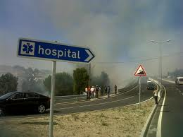

TITULOOOOOOO

Morreu o professor e empresário Manuel Forjaz, que, nos
últimos cinco anos, viveu uma intensa batalha contra um cancro no
pulmão, noticiou a TVI. Morreu neste domingo de manhã, aos 50 anos, em
casa, Lisboa.
Na sua página no Facebook , os dois filhos revelaram as instruções que
deixou para o funeral. Na sua página no Facebook, os dois filhos
revelaram as instruções que deixou para o funeral: “Não quero que
chorem. Não quero ninguém vestido de preto. Não quero caixão aberto e
quero uma cerimónia simples e alegre”. Para a despedida escolheu a
música Don’t Stop Believing, dos Journey, e o padre João Seabra. O corpo
está, neste domingo, a partir das 18h, na capela da Igreja da
Encarnação, ao Chiado. É aqui que amanhã se realiza uma missa, pelas
13h30, após a qual o corpo segue para o cemitério do Alto de São João.
Manuel Forjaz tinha um programa semanal na TVI24 conduzido por José
Alberto de Carvalho. Intitulado "28 Minutos e Sete Segundos de Vida",
analisava o país, os portugueses e a sua própria vida. A última emissão
foi transmitida quarta-feira à noite. A sua página no Facebook conta com
76 mil seguidores.
Fazia palestras onde partilhava a sua luta. Recusou sempre baixar os
braços e lançou um livro, Nunca Te Distraias da Vida, em que falava da
sua experiência pessoal na luta contra o cancro. Numa entrevista dada no
mês passado à Notícias Magazine, declarou: “Posso morrer de cancro,
mas o cancro nunca me matará. Se tenho dores, tomo compridos. Continuo a
trabalhar, a dar aulas, a viajar, com vida social. Há dias difíceis,
pós-químio, em que não consigo levantar-me. A maior parte das pessoas
não sabe que estou doente”.
Ontem, num dos seus últimos posts no Facebook, comentava com acutilância
a polémica em torno do papel desempenhado por Vítor Constâncio quando
era governador do Banco de Portugal e não detectou o que se passava no
BPN: "São bastante evidentes as semelhanças entre Vítor Constâncio e uma
ostra, sendo a mais importante o facto de serem os dois acéfalos".
Foi um dos fundadores do Instituto de Empreendedorismo Social e padrinho
do projecto Lig@-te, uma parceria entre a ANJE e uma extensa lista de
entidades. Neste contexto, desempenhou o papel de mentor de
empreendedores em situação de desemprego ou dificuldades sociais, que
fizeram formação para criarem o seu próprio negócio no Centro de
Desenvolvimento Comunitário da Ameixoeira. Foi aqui que, em 2009,
conheceu Vera Lúcia, com 27 anos e a dar os primeiros passos para fundar
o E-Beleza, um serviço de cabeleireiro, manicure e estética a idosos.
Na altura, ao PÚBLICO, Manuel Forjaz dizia que a Vera não era “o
empreendedor típico que aparece nos jornais, académico”. “Mas devia ser.
É o futuro do empreendedorismo”, defendeu, acrescentando que o
importante é passar a mensagem de que, com vontade e determinação, a
criação de um negócio pode estar ao alcance de qualquer um,
independentemente da condição social.
06/03/2014
medico
ricardo francisco
Notícias relacionadas...
titulo da noticia
titulo da noticia